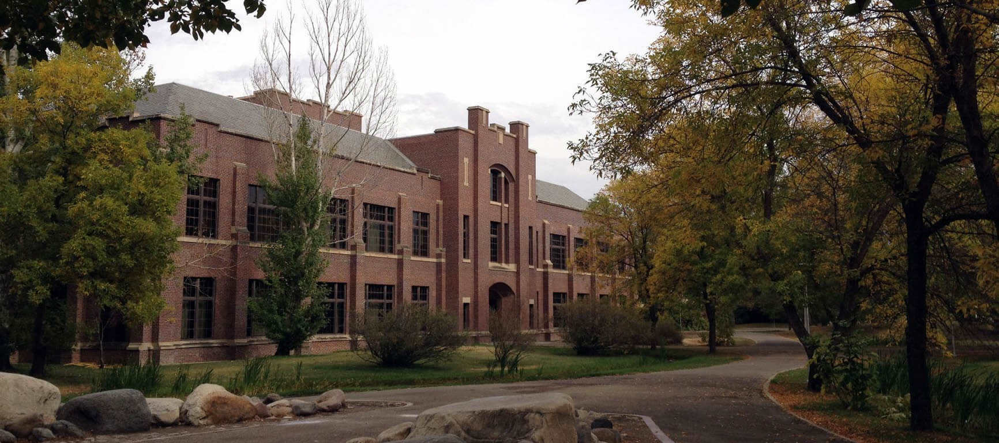

Photographer: Fifty Foot Shadows
Xiao Fan Ding
BSc
MSc
Home
About
Vitae
Research
History
Contact
Thorvaldson Building
Photgrapher: Nayan Sthankiya
Administration Building
Photgrapher: Rasam Bin Hossain
Engineering Building

Photgrapher: Daryl Mitchell
Canadian Light Source (Outside)
Photographer: Wikipedia
Canadian Light Source (Inside)
Photographer: Wikipedia